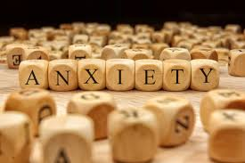
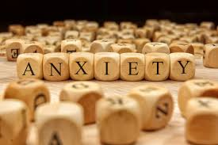

What is Mental Health
Mental health includes our emotional,
psychological, and social well-being. It affects how we think, feel, and act. It also helps determine how we handle stress, relate to others, and make healthy choices. Mental health is important at every stage of life, from childhood to adulthood. Although the terms are often used interchangeably, poor mental health and mental illness are not the same things. A person can
experience poor mental health and not be diagnosed with a mental illness


What is Anxiety and Stress?
Anxiety is the mind and body's reaction to stressful, dangerous, or unfamiliar situations. It's the sense of uneasiness, distress, or dread you feel before a significant event. A certain level of Anxiety helps us stay alert and aware, but for those suffering from an anxiety disorder, it feels far from normal - it can be completely debilitating. Stress is a physical and emotional reaction that people experience as they encounter changes in life. Stress is a normal feeling. However, long-term stress may contribute to or worsen a range of health problems including digestive disorders, headaches, sleep disorders, and other symptoms. Stress has been linked to depression, anxiety, and other mental illnesses.
 

How anxiety affects your body
- Stomach pain, nausea, or digestive trouble
- Headache
- Insomnia or other sleep issues
- Weakness or fatigue
- Rapid breathing or shortness of breath
- Pounding heart or increased heart rate
- Sweating
- Trembling or shaking
- Muscle tension or pain